Web presence
Business Websites & CMS
Launch or improve a responsive website that your team can confidently update and maintain.
- WordPress, Shopify & Wix
- Theme and content updates
- Mobile-friendly layouts
Teofilo Gonzaga III — Full-Stack Developer & QA Engineer
I help businesses launch responsive websites, improve WordPress, Shopify, and Wix sites, and build custom full-stack applications. Every project combines clear communication, thoughtful implementation, and practical QA from the start.
From improving an existing site to building a custom product, I focus on the work that makes your digital presence more useful, dependable, and easier to run.
Launch or improve a responsive website that your team can confidently update and maintain.
Turn a workflow or service idea into a practical application built around how people use it.
Connect the services behind your product so information moves securely and reliably.
Keep your website or application dependable through careful testing and practical maintenance.
I don't just build software — I break it too. Every feature I build comes with a quality-first mindset baked in from line one.
I'm a Full Stack Developer from Malaybalay City, Bukidnon, Philippines. My background spans both development and quality assurance, which means I think about reliability, edge cases, and user experience from the very first line of code.
Currently working as a Freelance Full Stack Developer, I'm building a multiplatform streaming media application using React Native and Django — covering platform infrastructure, DRM integration, backend services, and media delivery. I bring a quality-first mindset into every project, backed by previous QA automation experience.
I've freelanced on 8+ projects ranging from full-stack web systems to distributed microservices architectures, exploring technologies like gRPC, Docker, and Prometheus while managing everything from requirements to deployment.
Gives viewers a consistent streaming experience across devices while keeping premium media protected. Built with React Native and Django, using DRM, adaptive HLS/DASH delivery, Redis/Celery background processing, secure authentication, and containerized services.
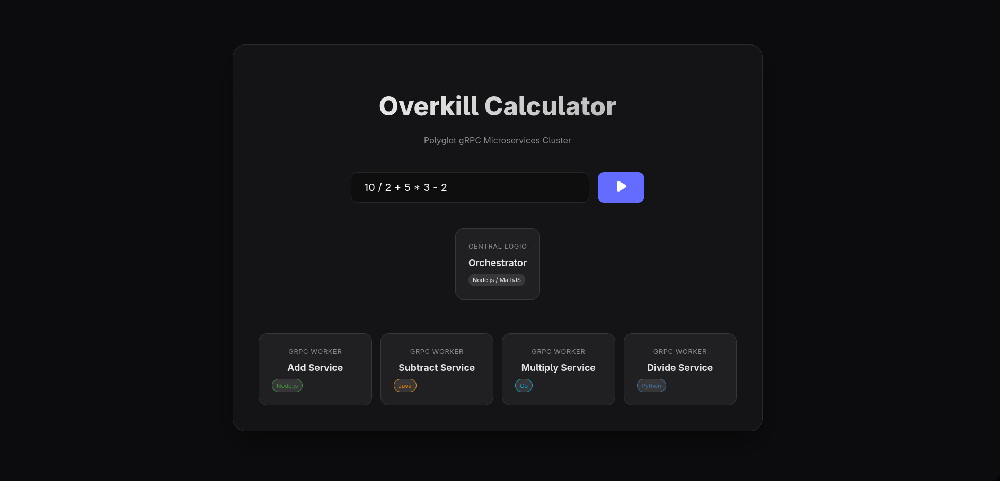
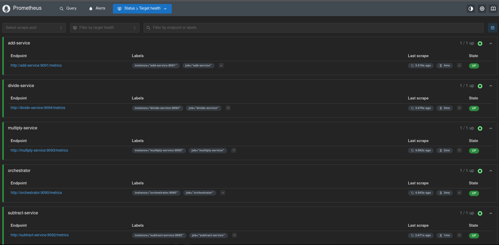
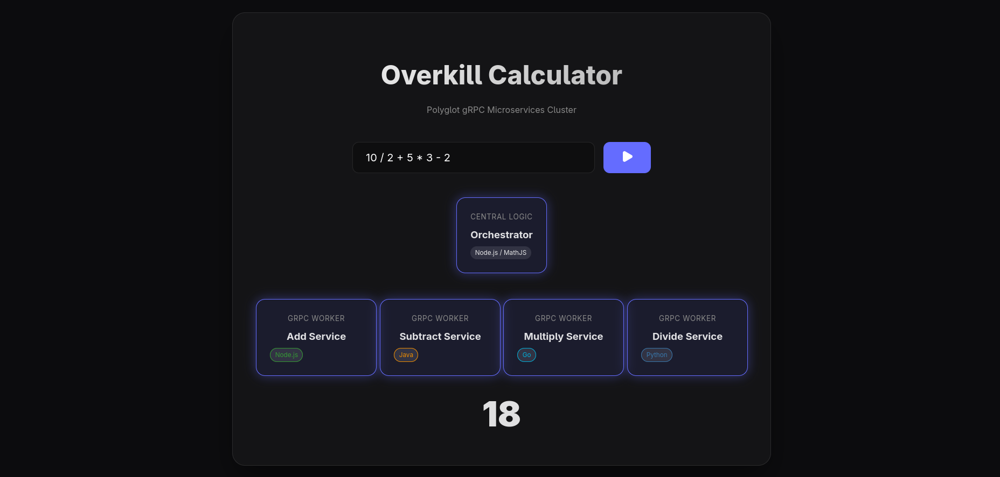
Makes a distributed architecture easy to explore by separating calculator operations into independently deployable services. Node.js, Go, Python, and Java services communicate through gRPC, run in Docker, and expose Prometheus metrics for monitoring.
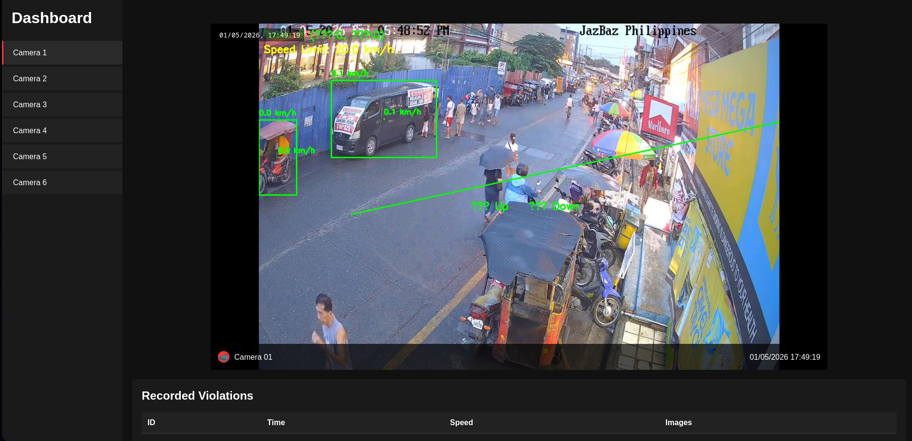
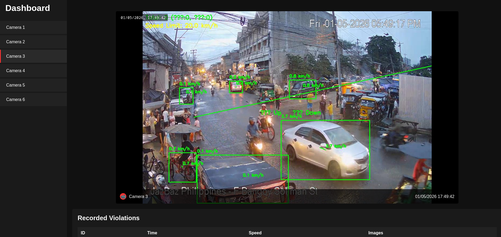
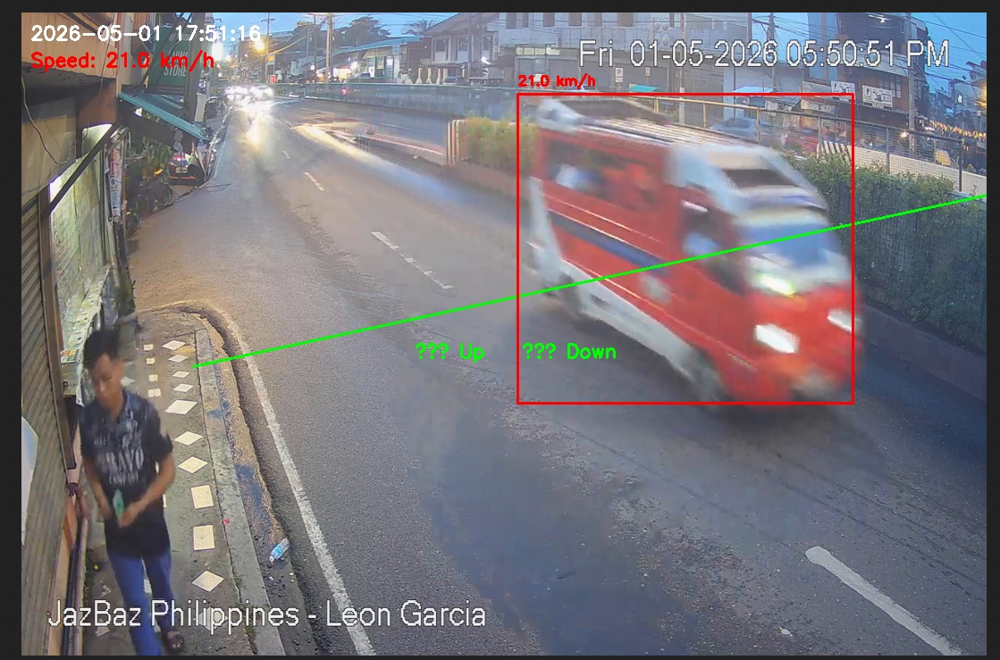
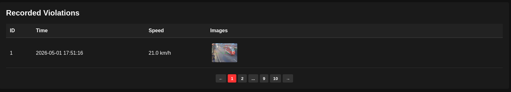
Automates vehicle detection and traffic counts from live or recorded footage. The Python application uses YOLOv8 and OpenCV to track cars, motorcycles, buses, and trucks, display a real-time counter, and flag vehicles crossing a defined line.
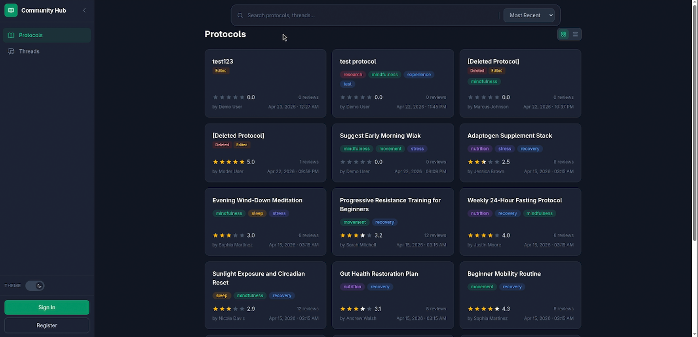
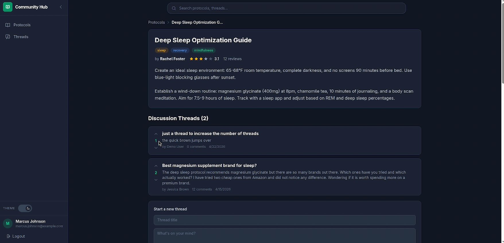
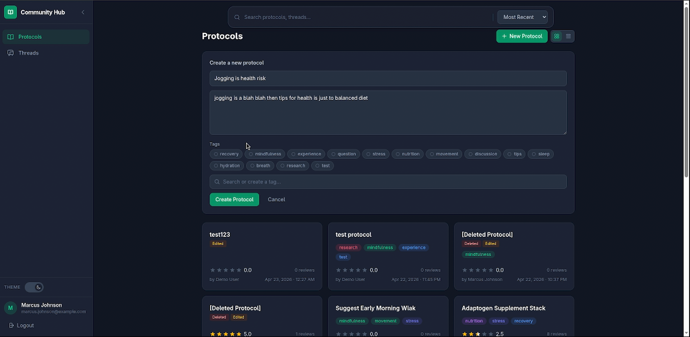
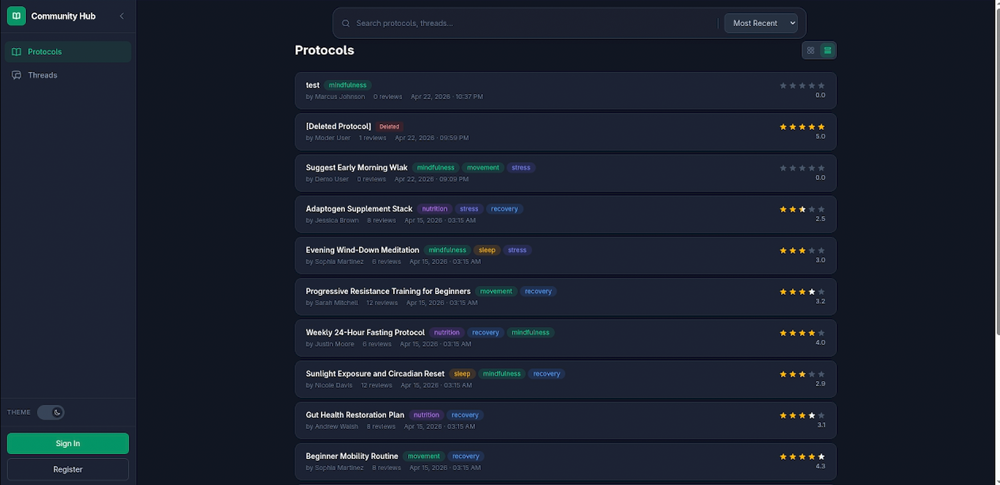
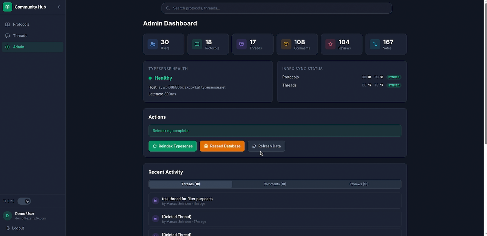
Gives a wellness community one place to publish, discover, discuss, and review shared protocols. The Laravel and React application combines a REST API, voting, nested discussions, fast search, and synchronized updates.
Makes digital reading easier to navigate and more engaging than a static document. The thesis-based platform combines structured content, interactive navigation, and reader-focused features in a browser-based experience.
Helps a massage business manage appointments, availability, and client records in one place. The online reservation system gives customers a clearer booking path while supporting daily scheduling and service management behind the scenes.
Centralizes procurement budgets, allocations, and compliance records for easier monitoring. The system tracks purchasing activity and turns stored data into repeatable operational reports.
Turns scattered student feedback into a structured instructor-evaluation workflow. The platform integrates with Google Forms to collect responses and organize the results for review and analysis.
Keeps tenant, lease, payment, and financial records organized for property management. The full-stack system supports day-to-day record keeping, payment tracking, agreement management, and financial reporting from a shared source of truth.
Whether you need a business website, WordPress, Shopify, or Wix maintenance, a custom web application, an API integration, or QA support, I can help move it forward. I'm also open to full-time roles where full-stack development and a quality-first mindset are valuable.